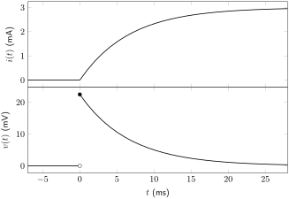
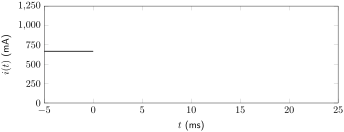
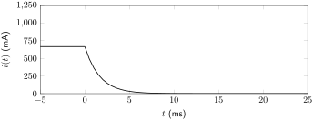
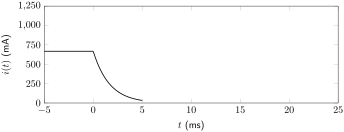
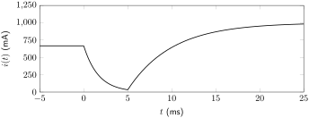
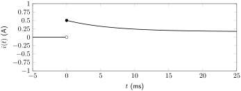
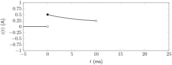
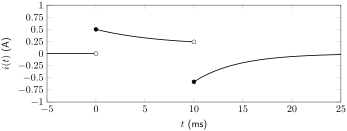
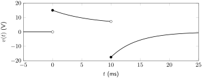

\begin{align*}
L\frac{di(t)}{dt} \amp= Ri_R(t)\\
\amp= -Ri(t)\\
0 \amp= L\frac{di(t)}{dt} + Ri(t)\\
\amp= \frac{di(t)}{dt} + \frac{R}{L}i(t)
\end{align*}
Section 6.5 Resistor-Inductor (RL) Circuits
Resistor-inductor (RL) circuits are circuits that contain one inductor (or combinations of inductors that can be reduced down to one equivalent inductance) as well as at least one resistive element. In this chapter, these circuits will be analyzed given an abrupt change from one set of DC conditions to another. The short-term difference in output that occurs as a result of this change in DC conditions is known as a transient analysis.
Resistors by themselves are incapable of having a transient change. This is because they do not store energy. Because an inductor stores energy, it is able to experience a transient change in response to changing voltage or current conditions of the circuit.
On the other hand, a steady-state analysis considers the operation of a circuit when conditions remain steady for a long period of time. In this chapter, the steady-state analysis will only include DC sources. To analyze the behavior of an inductor in a DC steady-state condition, recall from Section 6.3:
Based on (6.3.1), if the current remains unchanging through time, there will be no voltage drop over an inductor. Therefore, in DC conditions, an inductor can be replaced by a short circuit.
An important property of inductors that will aid in the analysis of the transient response is that the current through an inductor cannot change instantaneously. That is: \(i(0^-)=i(0^+)\text{.}\) In an ideal analysis where inductors have no parasitic capacitance (which is what this textbook will assume), the voltage dropped over an inductor can change instantaneously and therefore be discontinuous in time.
The procedure for analyzing the transient response of an RL circuit includes the following steps.
-
Calculate the initial current (\(i(0)\)) through the circuit element by analyzing the circuit in its initial steady-state condition. (If necessary, calculate at time \(t=0^-\) and at time \(t=0^+\text{.}\))
-
Calculate the final current (\(i(\infty)\)) through the circuit element by analyzing the circuit in its final steady-state condition.
-
If there are no dependent sources: At time \(t=0^+\text{,}\) disconnect all independent sources and calculate the equivalent resistance seen by the inductance. Use this value to calculate the time constant of the circuit.
-
If there are dependent sources or op-amps in the circuit: Either calculate the Thévenin equivalent circuit and use the Thévenin equivalent resistance as the equivalent resistance as seen by the inductor or derive the differential equation for the circuit and use (5.6.2) to calculate the time constant of the circuit.
-
Plug the above values into the equation for \(i(t)\text{.}\)
-
Use the equation relating voltage and current for the circuit element of interest to derive an equation for \(v(t)\text{.}\)
All RL circuits can be analyzed in this method to derive a transient response. Before considering circuits of this type in Subsection 6.5.3, we will first look at two special conditions of the transient response: the homogeneous transient response (i.e. \(i(\infty) = 0\)) and the charging from zero transient response (i.e. \(i(0) = 0\)).
Subsection 6.5.1 Discharging to Zero (Homogeneous) Transient Response
The discharging to zero response is a special case of the transient response that specifically looks at what happens when an inductor is initially connected to one or more sources that are suddenly removed from a circuit at a particular time. In other words: the inductor, after being disconnected from the power supply, discharges its stored energy through the resistive element(s) of the circuit. The circuit diagram shown in Figure 6.5.1 will be used to analyze this discharging response. The switch is in position a for a long time before suddenly moving to position b at time \(t=0\text{.}\)
![Circuit with four nodes consisting of a current source Iin, inductor L, resistor R, and SPDT switch. Iin is connected to one output of the SPDT switch at node a. The current source Iin flows into node a. The resistor connects to the other output of the SPDT switch at node b. The input of the SPDT switch connects to the inductor at node c. The current source Iin, the inductor, and the resistor all connect to ground at node d. The current source Iin flows out of node d. Branch current i(t) is defined through the inductor from node c to node d. Voltage drop v(t) is defined over the inductor from node c to node d. The SPDT switch is depicted as moving from position a to position b.](generated/latex-image/ch6-rldischarging.svg)
The differential equation for the circuit will be derived at the instant the switch changes position at \(t = 0^+\text{.}\) The circuit diagram in this condition is shown in Figure 6.5.2.
![Circuit with four nodes consisting of a current source Iin, inductor L, resistor R, and SPDT switch. Iin is connected to one output of the SPDT switch at node a. The current source Iin flows into node a. The resistor connects to the other output of the SPDT switch at node b. The input of the SPDT switch connects to the inductor at node c. The current source Iin, the inductor, and the resistor all connect to ground at node d. The current source Iin flows out of node d. Branch current i(t) is defined through the inductor from node c to node d. Voltage drop v(t) is defined over the inductor from node c to node d. The SPDT switch is depicted as being in position b.](generated/latex-image/ch6-rldischargingpositionb.svg)
Kirchhoff’s laws can be used to derive the differential equation describing this circuit. The inductor and resistor are in series with each other. Therefore, the current through both elements must be equal. Because the direction of \(i_R(t)\) opposes the direction of \(i(t)\text{,}\) a negative sign is used in this relationship, defined in (6.5.1).
\begin{equation}
i_R(t) = -i(t)\tag{6.5.1}
\end{equation}
The current-voltage relationship in an inductor, (6.3.1), can be used to define the voltage over the inductor.
Ohm’s law can be used to relate the current through the resistor and the voltage dropped over the resistor. Because the resistor and inductor are in parallel, both share an equivalent voltage drop of \(v(t)\text{.}\) This relationship is defined in (6.5.2).
\begin{equation}
v(t) = Ri_R(t)\tag{6.5.2}
\end{equation}
Equate (6.3.1) with (6.5.2). Use (6.5.1) to obtain an equation in terms of only \(i(t)\text{.}\) Then, reduce the equation into standard form as described in Subsection 5.6.2. This differential equation is given in (6.5.3). The derivation is shown in Derivation 6.5.1.1.
\begin{equation}
0 = \frac{di(t)}{dt} + \frac{R}{L}i(t)\tag{6.5.3}
\end{equation}
Derivation.
As expected, this is a homogeneous, first-order, linear, ordinary differential equation. The solution to this differential equation will not be derived in this book but is given in (6.5.4). Note the similarities with the homogeneous RC transient response solution, defined in (5.7.4).
\begin{equation}
i(t) = i(0^+)~\textrm{e}^{-\frac{t}{\tau}}~u(t) + i(0^-)~u(-t)\tag{6.5.4}
\end{equation}
The quantity \(\tau\) is the time constant of the circuit. It defines how quickly the current and voltage change at any point in the circuit. Larger \(\tau\) values imply that the inductor will take a longer time to discharge.
When comparing the homogeneous transient response given in (6.5.3) with the standard form of a differential equation shown in (5.6.2), we can find the value of \(\tau\text{,}\) given in (6.5.5), where \(R\) is the equivalent resistance as seen by the inductor (assuming there are no dependent sources or op-amps present in the circuit). If there are dependent sources or op-amps in the circuit, the Thévenin equivalent circuit seen by the inductor can be used to determine this equivalent resistance. (Alternatively, the differential equation can be derived from the circuit without doing a Thévenin equivalence, and \(\tau\) can be determined by analyzing the coefficient \(a_0\) of the equation in standard form.)
\begin{equation}
\tau = \frac{L}{R}\tag{6.5.5}
\end{equation}
Using (6.3.1), the transient response of the voltage over the discharging inductor can also be calculated. This is shown in (6.5.6) and derived in Derivation 6.5.1.2.
\begin{equation}
v(t) = -Ri(0^+)\textrm{e}^{-\frac{t}{\tau}}~u(t)\tag{6.5.6}
\end{equation}
Derivation.
\begin{align*}
v(t) \amp= L\frac{d}{dt}\left[i(0^+)~\textrm{e}^{-\frac{t}{\tau}}~u(t) + i(0^-)~u(-t)\right]\\
\amp= L\frac{d}{dt}\left[i(0^+) \textrm{e}^{-\frac{t}{\tau}}\right]~u(t) + L\frac{d}{dt}\left[i(0^-)\right]~u(-t)\\
\amp= -\frac{Li(0^+)}{\tau} \textrm{e}^{-\frac{t}{\tau}}~u(t)\\
\amp= -\frac{RLi(0^+)}{L} \textrm{e}^{-\frac{t}{\tau}}~u(t)\\
\amp= -Ri(0^+)\textrm{e}^{-\frac{t}{\tau}}~u(t)
\end{align*}
Example 6.5.3 Homogeneous transient response of an RL circuit.
Derive equations for \(i(t)\) and \(v(t)\) for the circuit shown below. The switch is closed for a very long time before opening at a time of 0 seconds.
![Circuit with 5 nodes consisting of an 8V source, 2.4k resistor, 6k resistor, 9k resistor, 0.3H inductor, and SPST switch. The high-potential end of the 8V source and the 2.4k resistor connect at node a. The 2.4k resistor connects to one end of the SPST switch at node b. The other end of the SPST switch, the 6k resistor, and the 9k resistor connect at node c. The 6k resistor and 0.3H inductor connect at node d. The 0.3H inductor, the 9k resistor, and the low-potential end of the 8V source connect at node e. Voltage v(t) is defined over the inductor from node d to node e. Branch current i(t) is defined through the inductor from node d to node e. The SPST switch is depicted as opening.](generated/latex-image/ch6-dischargingrlexamplefig1.svg)
First, calculate the initial conditions. Re-draw the circuit to represent the time before the switch opens. Because the circuit is under DC conditions, the inductor can be represented as a short.
Source transformation can be used to calculate the initial current through the inductor. The current source will have a value of
\begin{equation*}
\frac{8~\textrm{V}}{2.4~\textrm{k}\Omega} = 3.33~\textrm{mA}.
\end{equation*}
Use the current divider rule to calculate \(i(0)\text{.}\)
\begin{align*}
i(0^-) \amp= 3.33~\textrm{mA} \left(\frac{1.44~\textrm{k}\Omega}{6~\textrm{k}\Omega}\right)\\
\amp= 0.8~\textrm{mA}
\end{align*}
Analyze the discharging circuit. Re-draw at \(t = 0^+\text{.}\)
The equivalent resistance seen by the inductor is 15 kΩ. This is because the two resistors are in series with the inductor. This equivalent resistance can be used to calculate the RL time constant using (6.5.5).
\begin{align*}
\tau \amp= \frac{0.3~\textrm{H}}{15~\textrm{k}\Omega}\\
\amp= 2\times10^{-5}~\textrm{s}
\end{align*}
\begin{align*}
i(t) \amp= 0.8~\textrm{mA}~\textrm{e}^{-50000t}~u(t) + 0.8~\textrm{mA}~u(-t)\\
v(t) \amp= -12~\textrm{V}~\textrm{e}^{-50000t}~u(t)
\end{align*}
These two signals are plotted below as functions of time.
Subsection 6.5.2 Charging from Zero Transient Response
The charging from zero transient response of a circuit corresponds to how the voltage and/or current changes with respect to a sudden application of DC power to previously discharged circuit components. This is another specific case of the general RL transient response, which will be discussed in Subsection 6.5.3. This section specifically corresponds to scenarios where a fully discharged inductor is suddenly connected to a circuit containing at least one resistive element and a power supply. The circuit diagram shown in Figure 6.5.9 will be used to analyze the charging response. The switch is in position b for a long time before suddenly moving to position a at time \(t=0\text{.}\)
![Circuit with two meshes and four nodes consisting of a current source Iin, inductor L, resistor R, resistor RD, and SPDT switch. Iin is connected to R and output a of the SPDT switch at node a. Iin flows into node a. RD connects to the other output of the SPDT switch at node b. The input of the SPDT switch connects to the inductor at node c. Iin, the inductor, and RD all connect to ground at node d. Iin flows out of node d. Branch current i(t) is defined through the inductor from node c to node d. Voltage drop v(t) is defined over the inductor from node c to node d. The SPDT switch is depicted as moving from position b to position a.](generated/latex-image/ch6-nonhomogeneousrlcircuitfigure.svg)
In the initial state of the circuit, all of the energy that may have been stored in the inductor has completely discharged through the discharging resistor (\(R_D\)) resulting in an initial current of 0 mA.
At time \(t=0^+\text{,}\) the circuit can be analyzed to derive the differential equation defining the circuit. THe circuit diagram is shown in Figure 6.5.10.
![Circuit with two meshes and four nodes consisting of a current source Iin, inductor L, resistor R, resistor RD, and SPDT switch. Iin is connected to R and output a of the SPDT switch at node a. Iin flows into node a. RD connects to the other output of the SPDT switch at node b. The input of the SPDT switch connects to the inductor at node c. Iin, the inductor, and RD all connect to ground at node d. Iin flows out of node d. Branch current i(t) is defined through the inductor from node c to node d. Voltage drop v(t) is defined over the inductor from node c to node d. The SPDT switch is depicted as being in position a.](generated/latex-image/ch6-nonhomogeneousrlcircuitfigurepositionb.svg)
Use KCL to relate the current through each branch of the circuit. Because the resistor and inductor are in parallel, they share a common voltage \(v(t)\text{.}\) This relationship is defined in (6.5.7).
\begin{equation}
I_{IN} = \frac{v(t)}{R} + i(t)\tag{6.5.7}
\end{equation}
The charging response can be calculated by plugging (6.3.1) into (6.5.7) and reducing to standard form. This equation is defined in (6.5.8) and the derivation is shown in Derivation 6.5.2.1.
\begin{equation}
\frac{R}{L}I_{IN} = \frac{di(t)}{dt} + \frac{R}{L}i(t)\tag{6.5.8}
\end{equation}
Derivation.
\begin{align*}
I_{IN} \amp= \frac{v(t)}{R} + i(t)\\
I_{IN} \amp= \frac{L}{R}\frac{di(t)}{dt} + i(t)\\
\frac{R}{L}I_{IN} \amp= \frac{di(t)}{dt} + \frac{R}{L}i(t)
\end{align*}
The solution to this differential equation (assuming that the initial current through the inductor is 0 mA) is given in (6.5.9), where \(i(\infty)\) is the final steady-state current through the inductor after it has fully charged. Again, note the similarities with the RC circuit charging transient response defined in (5.7.10).
\begin{equation}
i(t) = i(\infty)~\left[1-\textrm{e}^{-\frac{t}{\tau}}\right]~u(t)\tag{6.5.9}
\end{equation}
Similar to the homogeneous RL circuit, the time constant \(\tau\) defines how quickly (or slowly) the inductor responds to changes in current. The equation for the time constant continues to be defined by (6.5.5) and is calculated in the same manner as with homogeneous RL circuits.
(6.3.1) can be used to calculate the voltage drop over the inductor during the transient charging process. The result is expressed in (6.5.10) and derived in Derivation 6.5.2.2.
\begin{equation}
Ri(\infty)~\textrm{e}^{-\frac{t}{\tau}}~u(t)\tag{6.5.10}
\end{equation}
Derivation.
\begin{align*}
v(t) \amp= L\frac{d}{dt}\left[i(\infty)~\left(1-\textrm{e}^{-\frac{t}{\tau}}\right)~u(t)\right]\\
\amp= L\frac{d}{dt}\left[i(\infty)~u(t)-i(\infty)~\textrm{e}^{-\frac{t}{\tau}}~u(t)\right]\\
\amp= L\frac{d}{dt}\left[i(\infty)\right]~u(t) - L\frac{d}{dt}\left[i(\infty)~\textrm{e}^{-\frac{t}{\tau}}\right]~u(t)\\
\amp= -\frac{Li(\infty)}{-\tau}\textrm{e}^{-\frac{t}{\tau}}~u(t)\\
\amp= \frac{LRi(\infty)}{L}\textrm{e}^{-\frac{t}{\tau}}~u(t)\\
\amp= Ri(\infty)~\textrm{e}^{-\frac{t}{\tau}}~u(t)
\end{align*}
Example 6.5.11 Charging from zero transient response.
Derive equations for \(i(t)\) and \(v(t)\) for the circuit below. The switch is open for a very long time before closing at a time of 0 seconds.
![Circuit with 4 nodes consisting of a 6mA source, three resistors (two 10ohm and one 12ohm), a 50mH inductor, and an SPST switch. The 6mA source connects to both 10ohm resistors at node a. The 6mA source flows into node a. The 10ohm (B) connects to one end of the SPST switch at node b. The other end of the SPST switch connects to the 12ohm and 50mH at node c. The 6mA source, 10ohm (A), 50mH, and 12ohm connect at node d. The 6mA source flows out of node d. Voltage v(t) drops over the inductor from node c to node d. Branch current i(t) flows through the inductor from node c to node d. The SPST switch is depicted as closing.](generated/latex-image/ch6-chargingfromzeroexample1fig1.svg)
The initial voltage and current properties of the inductor are zero. This is because the inductor is disconnected from the source in the initial steady-state, and any current has long since discharged through the 12 Ω resistor.
Calculate the final steady-state conditions of the circuit. Because the circuit is under DC conditions, the inductor can be represented as a short.
![Circuit with 3 nodes and 2 meshes consisting of a 6mA source, a short, two 10ohm resistors, and a 12ohm resistor. The 6mA source connects to both 10ohm resistors at node a. The 6mA source flows into node a. The 10ohm resistor (B), one end of the short, and the 12ohm connect at node b. The 6mA source, 12ohm, 10ohm (A), and the other end of the short connect at node c. The 6mA source flows out of node c. Voltage v(infinity) is defined over the short from node b to node c. Branch current i(infinity) is defined through the short from node b to node c.](generated/latex-image/ch6-chargingfromzeroexample1fig2.svg)
The 12 Ω resistor is shorted out of the circuit by the inductor. Re-draw the circuit with that resistor removed.
Use the current divider rule to calculate \(i(\infty)\text{.}\) The equivalent resistance of the circuit is 5 Ω.
\begin{align*}
i(\infty) \amp= 6~\textrm{mA} \left(\frac{5~\Omega}{10~\Omega}\right)\\
\amp= 3~\textrm{mA}
\end{align*}
Analyze the charging circuit. Re-draw at \(t = 0^+\text{.}\) Deactivate the current source by replacing it with an open to calculate the equivalent resistance as seen by the inductor.
The equivalent resistance as seen by the inductor is calculated below.
\begin{align*}
R_{EQ} \amp= (10~\Omega+10~\Omega)//12~\Omega\\
\amp= 20~\Omega//12~\Omega\\
\amp= 7.5~\Omega
\end{align*}
Use (6.5.5) to calculate the RL time constant.
\begin{align*}
\tau \amp= \frac{0.05~\textrm{H}}{7.5~\Omega}\\
\amp= 0.0067~\textrm{s}
\end{align*}
\begin{align*}
i(t) \amp= 3~\textrm{mA}~\left[1-\textrm{e}^{-150t}\right]~u(t)\\
v(t) \amp= 22.5~\textrm{mV}~\textrm{e}^{-150t}~u(t)
\end{align*}
These two signals are plotted below as functions of time.

Example 6.5.17 Charging from zero transient response with a dependent source.
Derive equations for \(i(t)\) and \(v(t)\) for the circuit shown below. Assume that the inductor is completely discharged in the initial steady-state condition. The switch has been open for a very long time before closing at a time of 0 seconds. The parameter values are \(I_S = 2~\textrm{A}\text{,}\) \(R_1 = 2~\Omega\text{,}\) \(R_2 = 3~\Omega\text{,}\) \(L = 25~\textrm{mH}\text{,}\) and \(k = 0.1\text{.}\)
![Circuit with 5 nodes consisting of a current source Is, resistors R1 and R2, VCVS k*Vx, inductor L, and SPST switch. Is, R1, and the high-potential end of the VCVS connect at node a. Is flows into node a. The low-potential end of the VCVS connects to R2 at node b. R2 connects to one end of the SPST switch at node c. The other end of the SPST switch connects to L at node d. Is, R1, and L connect at node e. Is flows out of node e. Voltage Vx is defined over R1 from node a to node e. Voltage v(t) is defined over L from node d to node e. Branch current i(t) is defined through L and flows from node d to node e. The SPST switch is depicted as closing.](generated/latex-image/ch6-chargingfromzeroexample2fig1.svg)
Analyze the circuit in the final steady-state condition. In this condition, the switch has been closed for a long time. The inductor can be replaced by a short. Numeric quantities for each component will be used in this circuit diagram.
Source transformation can be used in this circuit, but it is not terribly intuitive, as it changes the position of \(V_X\) in the circuit. Instead, KCL and KVL will be used.
First, use KCL at the node connecting all three circuit branches.
\begin{equation*}
2~\textrm{A} = \frac{V_X}{2~\Omega} + i(\infty)
\end{equation*}
Then, use KCL around the right mesh of the circuit.
\begin{align*}
V_X \amp= 0.1V_X + i(\infty)(3~\Omega)\\
V_X - 0.1V_X \amp= i(\infty)(3~\Omega)\\
0.9V_X \amp= i(\infty)(3~\Omega)\\
\frac{0.9V_X}{3~\Omega} \amp= i(\infty)\\
(0.3~\textrm{1/}\Omega)V_X - i(\infty) \amp= 0
\end{align*}
There are two equations and two unknowns. These two equations can be expressed in a matrix. The left column contains coefficients of \(V_X\text{,}\) the middle column contains coefficients of \(i(\infty)\text{,}\) and the right column contains constants. The units of V, A, and Ω are used.
\begin{equation*}
\begin{bmatrix}
0.3 \amp -1 \amp 0\\
0.5 \amp 1 \amp 2
\end{bmatrix}
\end{equation*}
The matrix is shown in reduced row echelon form below.
\begin{equation*}
\begin{bmatrix}
1 \amp 0 \amp 2.5\\
0 \amp 1 \amp 0.75\\
\end{bmatrix}
\end{equation*}
This means that \(i(\infty) = 0.75~\textrm{A}\text{.}\)
Method 1: Thévenin equivalent circuit
There are two methods that can be used to calculate \(\tau\text{.}\) In either case, the circuit should be analyzed at \(t = 0^+\text{,}\) so the switch will be closed. The first method that will be used in this example is to calculate the Thévenin equivalent circuit as seen by the inductor and use the Thévenin equivalent resistance in (6.5.5).
The Thévenin equivalent circuit is shown below.
Use the test source method to derive the Thévenin equivalent resistance. The independent current source has been deactivated.
Use Ohm’s law over \(R_1\) to derive an equation for \(V_X\text{.}\)
\begin{equation}
V_X = R_1I_{TEST}\tag{6.5.11}
\end{equation}
Use KCL around the circuit’s single loop to derive an equation for \(V_{TEST}\text{.}\)
\begin{equation}
V_{TEST} = R_2I_{TEST} - kV_X + R_1I_{TEST}\tag{6.5.12}
\end{equation}
\begin{align*}
V_{TEST} \amp= R_2I_{TEST} - kR_1I_{TEST} + R_1I_{TEST}\\
\amp= R_2I_{TEST} + (1-k)R_1I_{TEST}
\end{align*}
Use Ohm’s law to calculate the Thévenin equivalent resistance.
\begin{align*}
R_{TH} \amp= \frac{V_{TEST}}{I_{TEST}}\\
\amp= \frac{R_2I_{TEST} + (1-k)R_1I_{TEST}}{I_{TEST}}\\
\amp= R_2 + (1-k)R_1\\
\amp= 3~\Omega + (1-0.1)(2~\Omega)\\
\amp= 3~\Omega + (0.9)(2~\Omega)\\
\amp= 3~\Omega + 1.8~\Omega\\
\amp= 4.8~\Omega
\end{align*}
Use (6.5.5) to calculate \(\tau\text{.}\)
\begin{align*}
\tau \amp= \frac{25 \times 10^{-3}~\textrm{H}}{4.8~\Omega}\\
\amp= 0.0052~\textrm{s}
\end{align*}
Method 2: Deriving the differential equation
The second method that will be used is to derive the differential equation and use (5.6.2) to calculate \(\tau\text{.}\)
![Circuit with 4 nodes and 2 meshes consisting of current source Is, VCVS k*Vx, resistors R1 and R2, and inductor L. Is, R1, and the high-potential end of the VCVS connect at node a. Is flows into node a. The low-potential end of the VCVS connects to R2 at node b. R2 and L connect at node c. Is, R1, and L connect at node d. Is flows out of node d. Voltage Vx drops over R1 from node a to node d. Voltage v(t) drops over L from node c to node d. Branch current i(t) flows through L from node c to node d.](generated/latex-image/ch6-chargingfromzeroexample2fig5.svg)
Use KCL around the right loop of the circuit.
\begin{equation}
V_X = kV_X + R_2i(t) + L\frac{di(t)}{dt}\tag{6.5.13}
\end{equation}
Use KCL at the node connecting the three circuit branches.
\begin{equation}
I_S = \frac{V_X}{R_1} + i(t)\tag{6.5.14}
\end{equation}
Solve (6.5.14) for \(V_X\text{.}\)
\begin{equation}
V_X = R_1I_S - R_1i(t)\tag{6.5.15}
\end{equation}
\begin{align*}
R_1I_S - R_1i(t) \amp= k(R_1I_S - R_1i(t)) + R_2i(t) + L\frac{di(t)}{dt}\\
R_1I_S - kR_1I_S \amp= R_1i(t) - kR_1i(t) + R_2i(t) + L\frac{di(t)}{dt}\\
(1-k)R_1I_S \amp= (1-k)R_1i(t) + R_2i(t) + L\frac{di(t)}{dt}\\
(1-k)R_1I_S \amp= \left((1-k)R_1 + R_2\right)i(t) + L\frac{di(t)}{dt}\\
\frac{(1-k)R_1I_S}{L} \amp= \frac{di(t)}{dt} + \frac{(1-k)R_1+R_2}{L}i(t)\\
3.6 \amp= \frac{di(t)}{dt} + 192 i(t)
\end{align*}
This yields the same result as the Thévenin equivalent circuit method, as expected. If we had not already derived the equivalent resistance as seen by the inductor, we could use (6.5.5) to solve for \(R\text{.}\)
Use (6.5.9) to derive an equation for \(i(t)\) and (6.5.10) to derive an equation for \(v(t)\text{.}\)
\begin{align*}
i(t) \amp= 0.75~\textrm{A}~\left[1-\textrm{e}^{-192t}\right]~u(t)\\
v(t) \amp= 3.6~\textrm{V}~\textrm{e}^{-192t}~u(t)
\end{align*}
Subsection 6.5.3 General Transient Response
Two special cases of the RL transient response have been analyzed: the homogeneous response (\(i(\infty)=0\)) and the charging from zero response (\(i(0)=0\)). In general, the initial and final currents through an inductor can be any arbitrary values. The most general form of the equation for the transient response of an RL circuit is therefore given in (6.5.16).
\begin{equation}
i(t) = \left[i(\infty) + \left( i(0^+) - i(\infty) \right) \textrm{e}^{-\frac{t}{\tau}} \right]~u(t) + i(0^-)~u(-t)\tag{6.5.16}
\end{equation}
The time constant \(\tau\) defines how quickly (or slowly) the inductor responds to changes in current. The equation for the time constant continues to be defined by (6.5.5) and is calculated in the same manner as with previously defined RL circuits.
Voltage dropped over the inductor can be calculated by using (6.3.1). The solution is shown in (6.5.17) and derived in Derivation 6.5.3.1.
\begin{equation}
v(t) = R \left[i(\infty) - i(0^+)\right] \textrm{e}^{-\frac{t}{\tau}}~u(t)\tag{6.5.17}
\end{equation}
Derivation.
\begin{align*}
v(t) \amp= L\frac{d}{dt}\left[\left[i(\infty) + \left( i(0^+) - i(\infty) \right) \textrm{e}^{-\frac{t}{\tau}} \right]~u(t) + i(0^-)~u(-t)\right]\\
\amp= L\frac{d}{dt}\left[i(\infty)~u(t) + i(0^+)\textrm{e}^{-\frac{t}{\tau}}~u(t) - i(\infty)\textrm{e}^{-\frac{t}{\tau}}~u(t) + i(0^-)u(-t)\right]\\
\amp= L\frac{d}{dt}\left[i(\infty)\right]~u(t) + L\frac{d}{dt}\left[i(0^+)\textrm{e}^{-\frac{t}{\tau}}\right]~u(t) - L\frac{d}{dt}\left[i(\infty)\textrm{e}^{-\frac{t}{\tau}}\right]~u(t)\\
\amp+ L\frac{d}{dt}\left[i(0^-)\right]~u(-t)\\
\amp= \frac{Li(0^+)}{-\tau}\textrm{e}^{-\frac{t}{\tau}}~u(t) - \frac{Li(\infty)}{-\tau}\textrm{e}^{-\frac{t}{\tau}}~u(t)\\
\amp= -\frac{RLi(0^+)}{L}\textrm{e}^{-\frac{t}{\tau}}~u(t) + \frac{RLi(\infty)}{L}\textrm{e}^{-\frac{t}{\tau}}~u(t)\\
\amp= R\left[i(\infty)-i(0^+)\right]~\textrm{e}^{-\frac{t}{\tau}}~u(t)
\end{align*}
All of the equations in this section of the text have discussed calculating the current through the inductor. It is also possible to derive a first-order equation to calculate voltage over or current through any arbitrary component in a circuit. It is important to note that the initial conditions may be discontinuous. This is because while the current through an inductor is continuous for all time, that is not necessarily true for other circuit elements such as resistors, particularly if they are not connected in series with an inductor.
To calculate the transient current response through a circuit element with a discontinuous current, (6.5.16) can still be used. Analyze the circuit in the initial steady-state to calculate \(i(0^-)\text{.}\) Analyze the circuit in the final steady-state to calculate \(i(\infty)\text{.}\) Analyze the circuit at the exact moment the conditions change to calculate \(i(0^+)\text{,}\) using the current continuity of the inductor to help calculate any necessary quantities.
To calculate the transient voltage response over a circuit element, use the appropriate relationship between voltage and current through that circuit element. (For example, Ohm’s law will be used to calculate the voltage dropped over a resistor.)
Calculation of the time constant is unaffected by the choice of circuit element.
Example 6.5.23 General transient response of an inductor.
Derive an equation for \(i(t)\) for the circuit below. Switch S1 is closed for a very long time before opening at a time of 0 seconds. Switch S2 is open for a very long time before closing at a time of 0.005 seconds.
![Circuit with 6 nodes consisting of an 8V source, 12V source, four 12ohm resistors (R1, R2, R3, and R4), a 20mH inductor, and two SPST switches (S1 and S2). The high-potential end of the 8V source connects to R1 at node a. R1 connects to one end of S1 at node b. The other end of S1 connects to R2, S2, and the 20mH inductor at node c. The other end of S2, R3, and R4 connect at node d. R4 connects to the high-potential end of the 12V source at node e. The low-potential end of both sources, R2, R3, and the 20mH inductor connect at node f. Branch current i(t) is defined as flowing through the 20mH inductor from node c to node f. Switch S1 is depicted as opening. Switch S2 is depicted as closing.](generated/latex-image/ch6-generalexample1fig1.svg)
Analyze the initial conditions of the circuit. Switch S1 has been closed for a long time and switch S2 is open. The inductor can be replaced with a short.
The 12 Ω resistor in parallel with the inductor (which acts like a short) is shorted out of the circuit and can be removed.
Use Ohm’s law to calculate \(i(0)\text{.}\)
\begin{align*}
i(0) \amp= \frac{8~\textrm{V}}{12~\Omega}\\
\amp= 0.667~\textrm{A}\\
\amp= 667~\textrm{mA}
\end{align*}
This means the equation for \(i(t)\) will contain a term of \(667~\textrm{mA}~u(-t)\text{,}\) representing the initial steady-state conditions of the circuit. This creates an \(i(t)\) graph that so far appears as follows.

Analyze the circuit with both switches open to determine how the circuit will act between 0 s and 0.005 s (5 ms). Both sources are disconnected from the circuit in this interval of time.
The equivalent resistance seen by the inductor is 12 Ω during this time interval. Use (6.5.5) to calculate \(\tau\) during this interval of time.
\begin{align*}
\tau \amp= \frac{20 \times 10^{-3}~\textrm{H}}{12~\Omega}\\
\amp= 1.67 \times 10^{-3}~\textrm{s}
\end{align*}
This means that the equation for \(i(t)\) will contain a term of \(667~\textrm{mA}~\textrm{e}^{-600t}~u(t)\text{.}\) The graph of the current containing both terms appears below.

Before analyzing the circuit when S2 closes, calculate the value of \(i(t)\) at 5 ms, which represents the “initial condition” experienced by the inductor when that switch closes.
\begin{align*}
i(0.005) \amp= 667~\textrm{mA}~\textrm{e}^{-600(0.005)}\\
\amp = 667~\textrm{mA}~\textrm{e}^{-3}\\
\amp= (667~\textrm{mA})(0.0498)\\
\amp= 33.2~\textrm{mA}
\end{align*}
At 0.005 s, the exponential term describing the decay with \(\tau = 1.67 \times 10^{-3}~\textrm{s}\) no longer dictates how the circuit operates. This term must be subtracted out at \(t = 0.005~\textrm{s}\text{.}\) Therefore, the equation for \(i(t)\) will contain a term of \(-33.2~\textrm{mA}~\textrm{e}^{-600(t-0.005)}~u(t-0.005)\text{.}\) The graph of the current containing all three terms is shown below.

Analyze the circuit at \(t = 0.005^+~\textrm{s}\) to calculate the equivalent resistance seen by the inductor to calculate the value of \(\tau\) in this condition. The 12 V source has been deactivated.
The three 12 Ω resistors are in parallel. Therefore, the equivalent resistance is one-third of 12 Ω, which is 4 Ω. Use (6.5.5) to calculate the value of \(\tau\) for the circuit after 0.005 s.
\begin{align*}
\tau \amp= \frac{20 \times 10^{-3}~\textrm{H}}{4~\Omega}\\
\amp= 5 \times 10^{-3}~\textrm{s}
\end{align*}
Analyze the circuit in the final steady-state condition to calculate \(i(\infty)\text{.}\) Switch S1 is open and S2 has been closed for a very long time. The inductor can be replaced by a short.
The two resistors in parallel with the inductor (which acts like a short) are shorted out of the circuit and can be removed.
Use Ohm’s law to calculate \(i(\infty)\text{.}\)
\begin{align*}
i(\infty) \amp= \frac{12~\textrm{V}}{12~\Omega}\\
\amp= 1~\textrm{A}\\
\amp= 1000~\textrm{mA}
\end{align*}
This means the equation for \(i(t)\) will contain a term of \(\left[1000~\textrm{mA} - 966.8~\textrm{mA}~\textrm{e}^{-200(t-0.005)}\right]~u(t)\text{.}\) The graph of \(i(t)\) including all terms is shown below.

The overall equation for \(i(t)\) is expressed below.
\begin{align*}
i(t) \amp= 667~\textrm{mA}~u(-t) + 667~\textrm{mA}~\textrm{e}^{-600t}~u(t)\\
\amp- 33.2~\textrm{mA}~\textrm{e}^{-600(t-0.005)}~u(t-0.005)\\
\amp+ \left[1000~\textrm{mA} - 966.8~\textrm{mA}~\textrm{e}^{-200(t-0.005)}\right]~u(t)
\end{align*}
Example 6.5.35 General transient response of a resistor in an RL circuit.
Derive equations for \(i(t)\) and \(v(t)\) for the circuit below. The switch is open for a very long time before closing at a time of 0 seconds. The switch then re-opens at a time of 0.01 seconds.
![Circuit with 6 nodes consisting of a 30V source, 10mA source, 12ohm resistor, 36ohm resistor, 6ohm resistor, 30ohm resistor, 5ohm resistor, 100mH inductor, and SPST switch. The high-potential end of the 30V source connects to the 12ohm at node a. The 12ohm connects to the SPST at node b. The other end of the SPST connects to the 36ohm and 6ohm resistors at node c. The 6ohm, 30ohm, and 5ohm resistors connect at node d. The 5ohm resistor, 100mH inductor, and 10mA source connect at node e. The 10mA source flows into node e. The low-potential end of the 30V source, 36ohm resistor, 30ohm resistor, 100mH inductor, and 10mA source connect at node f. The 10mA source flows out of node f. Voltage v(t) drops over the 30ohm resistor from node d to node f. Branch current i(t) flows through the 30ohm resistor from node d to node f. The SPST switch is depicted as closing.](generated/latex-image/ch6-generalexample2fig1.svg)
Analyze the initial conditions of the circuit before the switch closes at 0 seconds. At this time, the switch is open and the inductor acts as a short. The 30 V source is disconnected from the circuit.
![Circuit with 4 nodes and 3 meshes consisting of 36ohm, 6ohm, 30ohm, 5ohm resistors, a short, and a 10mA source. The 36ohm and 6ohm resistors connect at node a. The 6ohm, 30ohm, and 5ohm resistors connect at node b. The 5ohm resistor connects to the short and 10mA source at node c. The 10mA source flows into node c. The 36ohm and 30ohm resistors connect to the short and 10mA source at node d. The 10mA source flow out of node d. Voltage v(0-) drops over the 30ohm resistor from node b to node d. Branch current i(0-) flows through the 30ohm resistor from node b to node d. Branch current iL(0) flows through the short from node c to node d.](generated/latex-image/ch6-generalexample2fig2.svg)
All of the resistors are shorted out of the circuit. Therefore, \(i(0^-)\) is equal to 0. However, the inductor will have an initial current equal to the source current: 10 mA. This is important to know because the inductor current is continuous with time.
To calculate \(i(0^+)\text{,}\) analyze the circuit at \(t = 0^+\text{.}\) Treat the inductor as a source of 10 mA. The switch is closed.
![Circuit with 5 nodes and 4 meshes consisting of a 30V source, 12ohm, 36ohm, 6ohm, 30ohm, and 5ohm resistors, and two 10mA sources. The high-potential end of the 30V source connects to the 12ohm at node a. The 12ohm, 36ohm, and 6ohm resistors connect at node b. The 6ohm, 30ohm, and 5ohm resistors connect at node c. The 5ohm resistor connects to both 10mA sources at node d. One 10mA source flows into node d and the other 10mA source flows out of node d. The low-potential end of the 30V source, 36ohm, 30ohm, and both 10mA sources connect at node e. One of the 10mA sources flows into node e, and the other flows out of node e. Voltage v(0+) drops over the 30ohm resistor from node c to node e. Branch current i(0+) flows through the 30ohm resistor from node c to node d.](generated/latex-image/ch6-generalexample2fig3.svg)
The two current sources can be combined together into a single current source of 0 mA. This is equivalent to a branch with no current, which can be represented as an open circuit. (No current flows through the 5 Ω resistor.)
![Circuit with 4 nodes and 2 meshes consisting of a 30V source, 12ohm, 36ohm, 6ohm, 30ohm, and 5ohm resistors. The high-potential end of the 30V source connects to the 12ohm at node a. The 12ohm, 36ohm, and 6ohm resistors connect at node b. The 6ohm, 30ohm, and 5ohm resistors connect at node c. The other end of the 5ohm resistor dangles (connects to an open). The low-potential end of the 30V source connects to the 36ohm and 30ohm resistors at node d. Voltage v(0+) drops over the 30ohm resistor from node c to node d. Branch current i(0+) flows through the 30ohm resistor from node c to node d.](generated/latex-image/ch6-generalexample2fig4.svg)
The 5 Ω resistor does not contribute to the circuit and can be removed.
![Circuit with 4 nodes and 2 meshes consisting of a 30V source, 12ohm, 36ohm, 6ohm, and 30ohm resistors. The high-potential end of the 30V source connects to the 12ohm at node a. The 12ohm, 36ohm, and 6ohm resistors connect at node b. The 6ohm and 30ohm resistors connect at node c. The low-potential end of the 30V source connects to the 36ohm and 30ohm resistors at node d. Voltage v(0+) drops over the 30ohm resistor from node c to node d. Branch current i(0+) flows through the 30ohm resistor from node c to node d.](generated/latex-image/ch6-generalexample2fig5.svg)
Apply the voltage divider rule to the two-mesh circuit to calculate \(v(0^+)\text{.}\) The equivalent resistance of the right-hand mesh is equal to
\begin{align*}
R_{EQ} \amp= 36~\Omega // (6~\Omega + 30~\Omega)\\
\amp= 36~\Omega // 36~\Omega\\
\amp= 18~\Omega.
\end{align*}
\begin{align*}
v(0^+) \amp= 30~\textrm{V}\left(\frac{18~\Omega}{12~\Omega+18~\Omega}\right)\left(\frac{30~\Omega}{30~\Omega+6~\Omega}\right)\\
\amp= 30~\textrm{V}\left(\frac{18~\Omega}{30~\Omega}\right)\left(\frac{30~\Omega}{36~\Omega}\right)\\
\amp= 30~\textrm{V}(0.6)(0.833)\\
\amp= 15~\textrm{V}
\end{align*}
Use Ohm’s law to calculate \(i(0^+)\text{.}\)
\begin{align*}
i(0^+) \amp= \frac{v(0^+)}{30~\Omega}\\
\amp= \frac{15~\textrm{V}}{30~\Omega}\\
\amp= 0.5~\textrm{A}
\end{align*}
Analyze the circuit with the switch closed to determine how the switch will act between 0 s and 0.01 s.
![Circuit with 5 nodes and 4 meshes consisting of a 30V source, 10mA source, 100mH inductor, and 12ohm, 36ohm, 6ohm, 30ohm, and 5ohm resistors. The high-potential end of the 30V source connects to the 12ohm at node a. The 12ohm, 36ohm, and 6ohm resistors connect at node b. The 6ohm, 30ohm, and 5ohm resistors connect at node c. The 5ohm resistor, 100mH inductor, and 10mA source connect at node d. The 10mA source flows into node d. The low-potential end of the 30V source, 36ohm resistor, 30ohm resistor, 100mH inductor, and 10mA source connect at node e. The 10mA source flows out of node e. Voltage v(t) drops over the 30ohm resistor from node c to node e. Branch current i(t) flows through the 30ohm resistor from node c to node e.](generated/latex-image/ch6-generalexample2fig6.svg)
The equivalent resistance as seen by the inductor can be calculated by disconnecting all independent sources.

The equivalent resistance as seen by the inductor is equal to
\begin{align*}
R_{EQ} \amp= (((12~\Omega // 36~\Omega) + 6~\Omega) // 30~\Omega) + 5~\Omega\\
\amp= ((9~\Omega + 6~\Omega) // 30~\Omega) + 5~\Omega\\
\amp= (15~\Omega // 30~\Omega) + 5~\Omega\\
\amp= 10~\Omega + 5~\Omega\\
\amp= 15~\Omega.
\end{align*}
Use (6.5.5) to calculate \(\tau\text{.}\)
\begin{align*}
\tau \amp= \frac{0.1~\textrm{H}}{15~\Omega}\\
\amp= 0.00667~\textrm{s}
\end{align*}
Calculate the final steady-state value of the current if the switch were to remain closed. This value will be referred to as \(i(\infty_c)\text{,}\) where the subscript c means closed. The inductor can be replaced by a short. The current through the inductor will also need to be calculated, as it represents a continuous quantity that can be used when we need to calculate the current through the resistor at the instant the switch re-opens.
![Circuit with 5 nodes and 4 meshes consisting of a 30V source, 10mA source, 12ohm, 36ohm, 6ohm, 30ohm, and 5ohm resistors, and a short. The high-potential end of the 30V source connects to the 12ohm resistor at node a. The 12ohm, 36ohm, and 6ohm resistors connect at node b. The 6ohm, 30ohm, and 5ohm resistors connect at node c. The 5ohm resistor, short, and 10mA source connect at node d. The 10mA source flows into node d. The low-potential end of the 30V source, 36ohm and 30ohm resistors, short, and 10mA source connect at node e. The 10mA source flows out of node e. Voltage v(infinity,c) drops over the 30ohm resistor from node c to node e. Branch current i(infinity,c) flows through the 30ohm resistor from node c to node e. Branch current iL(infinity,c) flows through the short from node d to node e.](generated/latex-image/ch6-generalexample2fig8.svg)
Superposition will be the simplest method to solve for both \(i(\infty_c)\) and \(i_L(\infty_c)\text{.}\) Start by disconnecting the current source.
![Circuit with 4 nodes and 3 meshes consisting of a 30V source, 12ohm, 36ohm, 6ohm, 30ohm, and 5ohm resistors. The high-potential end of the 30V source connects to the 12ohm resistor at node a. The 12ohm, 36ohm, and 6ohm resistors connect at node b. The 6ohm, 30ohm, and 5ohm resistors connect at node c. The low-potential end of the 30V source connects to the 36ohm, 30ohm, and 5ohm resistors at node d. Voltage v1(infinity,c) drops over the 30ohm resistor from node c to node d. Branch current i1(infinity,c) flows through the 30ohm resistor from node c to node d. Branch current iL1(infinity,c) flows through the 5ohm resistor from node c to node d.](generated/latex-image/ch6-generalexample2fig8b.svg)
Use source transformation to convert the voltage source into a current source.
\begin{equation*}
\frac{30~\textrm{V}}{12~\Omega} = 2.5~\textrm{A}
\end{equation*}
![Circuit with 3 nodes and 4 meshes consisting of a 2.5A source, and 12ohm, 36ohm, 6ohm, 30ohm, and 5ohm resistors. The 2.5A source, 12ohm, 36ohm, and 6ohm resistors connect at node a. The 2.5A source flows into node a. The 6ohm, 30ohm, and 5ohm resistors connect at node b. The 2.5A source and 12ohm, 36ohm, 30ohm, and 5ohm resistors connect at node c. The 2.5A source flows out of node c. Branch current i1(infinity,c) flows through the 30ohm resistor from node b to node c. Branch current iL1(infinity,c) flows through the 5ohm resistor from node b to node c.](generated/latex-image/ch6-generalexample2fig9.svg)
Combine parallel resistors.
![Circuit with 3 nodes and 3 meshes consisting of a 2.5A source and 9ohm, 6ohm, 30ohm, and 5ohm resistors. The 2.5A source connects to the 9ohm and 6ohm resistors at node a. The 2.5A source flows into node a. The 6ohm, 30ohm, and 5ohm resistors connect at node b. The 2.5A source connects to the 9ohm, 30ohm, and 5ohm resistors at node c. The 2.5A source flows out of node c. Branch current i1(infinity,c) flows through the 30ohm resistor from node b to node c. Branch current iL1(infinity,c) flows through the 5ohm resistor from node b to node c.](generated/latex-image/ch6-generalexample2fig10.svg)
Transform the current source to a voltage source.
\begin{equation*}
(2.5~\textrm{A})(9~\Omega) = 22.5~\textrm{V}
\end{equation*}
![Circuit with 4 nodes and 2 meshes consisting of a 22.5V source and 9ohm, 6ohm, 30ohm, and 5ohm resistors. The high-potential end of the 22.5V source connects to the 9ohm at node a. The 9ohm and 6ohm resistors connect at node b. The 6ohm, 30ohm, and 5ohm resistors connect at node c. The low-potential end of the 22.5V source connects to the 30ohm and 5ohm resistors at node d. Branch current i1(infinity,c) flows through the 30ohm resistor from node c to node d. Branch current iL1(infinity,c) flows through the 5ohm resistor from node c to node d.](generated/latex-image/ch6-generalexample2fig11.svg)
Combine series resistors.
![Circuit with 3 nodes and 2 meshes consisting of a 22.5V source and 15ohm, 30ohm, and 5ohm resistors. The high-potential end of the 22.5V source connects to the 15ohm resistor at node a. The 15ohm, 30ohm, and 5ohm resistors connect at node b. The low-potential end of the 22.5V source connects to the 30ohm and 5ohm resistors at node c. Branch current i1(infinity,c) flows through the 30ohm resistor from node b to node c. Branch current iL1(infinity,c) flows through the 5ohm resistor from node b to node c.](generated/latex-image/ch6-generalexample2fig12.svg)
Transform the voltage source into a current source.
\begin{equation*}
\frac{22.5~\textrm{V}}{15~\Omega} = 1.5~\textrm{A}
\end{equation*}
Calculate the equivalent resistance of the circuit.
\begin{align*}
R_{EQ} \amp= \frac{1}{\frac{1}{15~\Omega} + \frac{1}{30~\Omega} + \frac{1}{5~\Omega}}\\
\amp= 3.33~\Omega
\end{align*}
Use the current divider rule to calculate \(i_1(\infty_c)\text{.}\)
\begin{align*}
i_1(\infty_c) \amp= 1.5~\textrm{A}\left(\frac{3.33~\Omega}{30~\Omega}\right)\\
\amp= 0.167~\textrm{A}
\end{align*}
Use the current divider rule to calculate \(i_{L1}(\infty_c)\text{.}\)
\begin{align*}
i_{L1}(\infty_c) \amp= 1.5~\textrm{A}\left(\frac{3.33~\Omega}{5~\Omega}\right)\\
\amp= 1~\textrm{A}
\end{align*}
Analyze the circuit with the voltage source deactivated.
![Circuit with 4 nodes and 4 meshes consisting of a 10mA source, a short, and 12ohm, 36ohm, 6ohm, 30ohm, and 5ohm resistors. The 12ohm, 36ohm, and 6ohm resistors connect at node a. The 6ohm, 30ohm, and 5ohm resistors connect at node b. The 5ohm resistor connects to the short and the 10mA source at node c. The 10mA source flows into node c. The 12ohm, 36ohm, 30ohm resistors, short, and 10mA source connect at node d. The 10mA source flows out of node d. Branch current i2(infinity,c) flows through the 30ohm resistor from node b to node d. Branch current iL2(infinity,c) flows through the short from node c to node d.](generated/latex-image/ch6-generalexample2fig14.svg)
All of the resistors are shorted out of the circuit and will have no current. This means that \(i_2(\infty_c)\) is zero. The total current through the 30 Ω resistor is 0.167 A.
All of the current from the source will flow through the inductor (which acts like a short). Calculate the total value of \(i_L(\infty_c)\text{.}\)
\begin{align*}
i_L(\infty_c) \amp= 1~\textrm{A} + 0.01~\textrm{A}\\
\amp= 1.01~\textrm{A}
\end{align*}
This means the equation for \(i(t)\) will have a term of \(\left[0.167~\textrm{A} + 0.333~\textrm{A}~\textrm{e}^{-150t}\right]~u(t)\text{.}\) The graph of the current so far is shown below.

Before analyzing the circuit when the switch re-opens, calculate the value of \(i(t)\) at a time of \(0.01^-~\textrm{s}\text{.}\) This will act as the value to subtract out of the equation for the second time interval.
\begin{align*}
i(0.01^-) \amp= 0.167~\textrm{A} + 0.333~\textrm{A}~\textrm{e}^{-150(0.01)}\\
\amp= 0.167~\textrm{A} + 0.333~\textrm{A}~\textrm{e}^{-1.5}\\
\amp= 0.167~\textrm{A} + 0.333~\textrm{A}(0.223)\\
\amp= 0.167~\textrm{A} + 0.074~\textrm{A}\\
\amp= 0.241~\textrm{A}
\end{align*}
The equation for \(i(t)\) will contain a term of \(\left[-0.167~\textrm{A}-0.074~\textrm{e}^{-150(t-0.01)}\right]~u(t-0.01)\text{.}\) The graph of \(i(t)\) so far is plotted below. (Note the open circle at 0.01 s; this is due to the discontinuity in current through a resistor.)

Analyze the circuit at \(t=0.01^+\) to calculate the new “initial condition” of the current at that time. The switch has re-opened, and the inductor can be replaced by a current source of 1.01 A, as that was the value of the current at a time of 0.01 s.
![Circuit with 4 nodes and 3 meshes consisting of a 1.01A source, 10mA source, and 36ohm, 6ohm, 30ohm, and 5ohm resistors. The 36ohm and 6ohm resistors connect at node a. The 6ohm, 30ohm, and 5ohm resistors connect at node b. The 5ohm resistor connects to both current sources at node c. The 1.01A source flows out of node c. The 10mA source flows into node c. The 30ohm and 30ohm resistors connect to both sources at node d. The 1.01A source flows into node d. The 10mA source flows out of node d. Branch current i(0.01+) flows through the 30ohm resistor from node b to node d.](generated/latex-image/ch6-generalexample2fig17.svg)
Combine the two current sources and combine the two series resistors.
The 5 Ω resistor does not affect the current through the 42 Ω or 30 Ω branches. The equivalent resistance of the circuit is therefore
\begin{align*}
R_{EQ} \amp= \frac{(42~\Omega)(30~\Omega)}{42~\Omega + 30~\Omega}\\
\amp= 17.5~\Omega
\end{align*}
Use the current divider rule to calculate \(i(0.01^+).\) Note the negative sign on the source, which is due to the polarity of the current source.
\begin{align*}
i(0.01^+) \amp= -1~\textrm{A}\left(\frac{17.5~\Omega}{30~\Omega}\right)\\
\amp= -1~\textrm{A}(0.583)\\
\amp= -0.583~\textrm{A}
\end{align*}
Analyze the circuit at \(t = 0.01^+\) to calculate the time constant of the circuit in the configuration with the switch open.
![Circuit with 4 nodes and 3 meshes consisting of a 10mA source, 100mH inductor, and 36ohm, 6ohm, 30ohm, and 5ohm resistors. The 36ohm and 6ohm resistors connect at node a. The 6ohm, 30ohm, and 5ohm resistors connect at node b. The 5ohm resistor, 100mH inductor, and 10mA source connect at node c. The 10mA source flows into node c. The 36ohm and 30ohm resistors connect to the 100mH inductor and 10mA source at node d. The 10mA source flows out of node d. Voltage v(t) drops over the 30ohm resistor from node b to node d. Branch current i(t) flows through the 30ohm resistor from node b to node d.](generated/latex-image/ch6-generalexample2fig19.svg)
Deactivate the current source to calculate the equivalent resistance as seen by the inductor.

The equivalent resistance as seen by the inductor is equal to
\begin{align*}
R_{EQ} \amp= ((36~\Omega + 6~\Omega) // 30~\Omega) + 5~\Omega\\
\amp= (42~\Omega // 30~\Omega) + 5~\Omega\\
\amp= 17.5~\Omega + 5~\Omega\\
\amp= 22.5~\Omega.
\end{align*}
Use (6.5.5) to calculate \(\tau\text{.}\)
\begin{align*}
\tau \amp= \frac{0.1~\textrm{H}}{22.5~\Omega}\\
\amp= 0.0044~\textrm{s}
\end{align*}
Analyze the final steady-state condition of the circuit with the switch re-opened. The inductor can be replaced by a short.
![Circuit with 4 nodes and 3 meshes consisting of a 10mA source, a short, and 36ohm, 6ohm, 30ohm, and 5ohm resistors. The 36ohm and 6ohm resistors connect at node a. The 6ohm, 30ohm, and 5ohm resistors connect at node b. The 5ohm resistor connects to the short and 10mA source at node c. The 10mA source flows into node c. The 36ohm and 30ohm resistors connect to the short and 10mA source at node d. The 10mA source flows out of node d. Voltage v(infinity) drops over the 30ohm resistor from node b to node d. Branch current i(infinity) flows through the 30ohm resistor from node b to node d.](generated/latex-image/ch6-generalexample2fig21.svg)
The resistors are shorted out of the circuit and have no current. Therefore, \(i(\infty)\) is equal to zero. The equation \(i(t)\) will therefore contain a term of \(-0.583~\textrm{A}~\textrm{e}^{-225(t-0.01)}~u(t-0.01)\text{.}\) The graph of current is shown below.

The overall equation for current is described below.
\begin{align*}
i(t) \amp= \left[0.167~\textrm{A} + 0.333~\textrm{A}~\textrm{e}^{-150t}\right]~u(t)\\
\amp+ \left[-0.167~\textrm{A}-0.074~\textrm{e}^{-150(t-0.01)}\right]~u(t-0.01)\\
\amp- 0.583~\textrm{A}~\textrm{e}^{-225(t-0.01)}~u(t-0.01)
\end{align*}
Use Ohm’s law to calculate \(v(t).\)
\begin{align*}
v(t) \amp= (30~\Omega)\biggl(\left[0.167~\textrm{A} + 0.333~\textrm{A}~\textrm{e}^{-150t}\right]~u(t)\\
\amp+ \left[-0.167~\textrm{A}-0.074~\textrm{e}^{-150(t-0.01)}\right]~u(t-0.01)\\
\amp- 0.583~\textrm{A}~\textrm{e}^{-225(t-0.01)}~u(t-0.01)\biggr)\\
\amp= \left[5~\textrm{V} + 10~\textrm{V}~\textrm{e}^{-150t}\right]~u(t)\\
\amp+ \left[-5~\textrm{V} - 2.23~\textrm{V}~\textrm{e}^{-150(t-0.01)}\right]~u(t-0.01)\\
\amp- 17.5~\textrm{V}~\textrm{e}^{-225(t-0.01)}~u(t-0.01)
\end{align*}
The graph of voltage is shown below.
